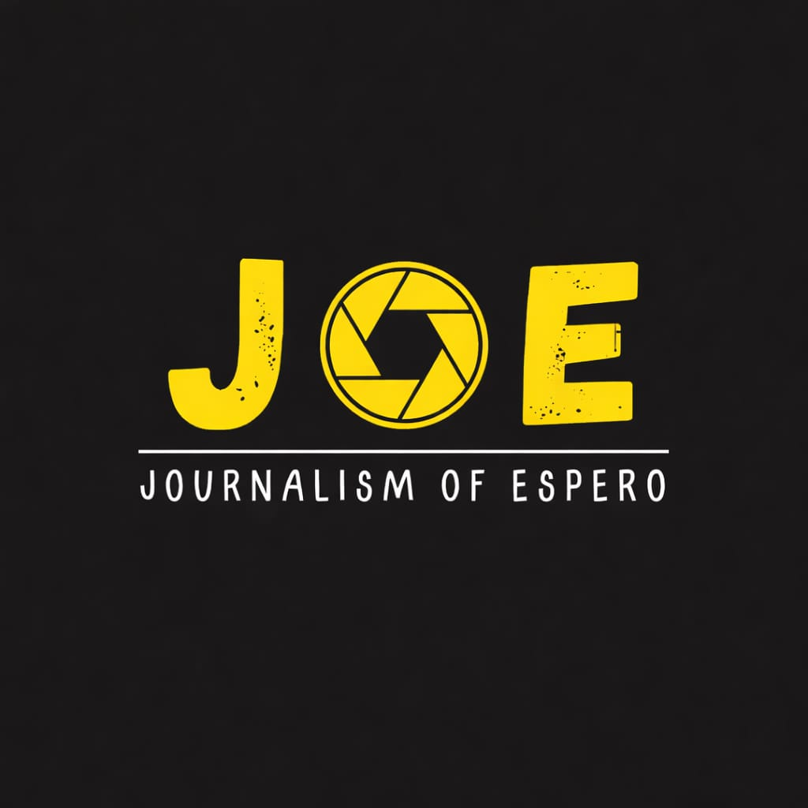

<!DOCTYPE html>
<html lang="id">
<head>
    <meta charset="UTF-8">
    <meta name="viewport" content="width=device-width, initial-scale=1.0">
    <title>Tentang Kami - JOE</title>
    <link rel="stylesheet" href="style.css">
    <link rel="stylesheet" href="responsive.css">
</head>
    <!-- Footer -->
    <footer class="footer">
        <div class="container">
            <!-- ... -->
        </div>
    </footer>

    <!-- TAMBAHKAN INI -->
    <script src="script.js"></script>
</body>
</html>
<body>
    <!-- Navigation -->
    <nav class="navbar">
        <div class="container">
            <div class="nav-brand">
                <h1>JOE</h1>
                <span class="tagline">Journalism Of Espero</span>
            </div>
            <button class="nav-toggle" aria-label="Toggle navigation">
                <span></span>
                <span></span>
                <span></span>
            </button>
            <ul class="nav-menu">
                <li><a href="index.html">Beranda</a></li>
                <li><a href="about.html" class="active">Tentang</a></li>
                <li><a href="team.html">Tim Kami</a></li>
                <li><a href="aktivitas.html">Dokumentasi</a></li>
            </ul>
        </div>
    </nav>

    <!-- Page Header -->
    <section class="page-header about-header">
        <div class="container">
            <div class="page-header-content">
                <span class="breadcrumb">Beranda / Tentang</span>
                <h2 class="animated-title">Tentang JOE</h2>
                <p class="animated-subtitle">Mengenal lebih dekat perjalanan dan komitmen kami</p>
            </div>
        </div>
        <div class="header-decoration">
            <div class="decoration-circle circle-1"></div>
            <div class="decoration-circle circle-2"></div>
            <div class="decoration-circle circle-3"></div>
        </div>
    </section>

    <!-- Story Section -->
    <section class="story enhanced-story">
        <div class="container">
            <div class="story-content">
                <div class="story-image">
                    
                    <div class="image-decoration">
                        <div class="decoration-dot"></div>
                        <div class="decoration-dot"></div>
                        <div class="decoration-dot"></div>
                    </div>
                </div>
                <div class="story-text fade-in-right">
                    <span class="section-label pulse-label">Kisah Kami</span>
                    <h3 class="slide-in-text">Berawal dari Mimpi Bersama</h3>
                    <p class="reveal-text">JOE (Jurnal Of Espero) didirikan pada tahun 2016 oleh Tonang Juniarta, S.Pd,Kor., M.Or yang memiliki visi yang sama: menciptakan wadah bagi generasi muda Espero untuk mengembangkan bakat dalam jurnalistik, dan berinovasi.</p>
                    <p class="reveal-text delay-1">Dari awal yang sederhana dengan hanya beberapa anggota yang diketuai oleh bapak Tonang Juniarta, kini kami telah tumbuh menjadi organisasi yang solid dengan puluhan anggota aktif di setiap angkatan angkatan. Setiap program yang kami jalankan didasari oleh semangat untuk memberdayakan dan menginspirasi.</p>
                    <p class="reveal-text delay-2">Kami percaya bahwa perubahan dimulai dari hal kecil, dan setiap individu memiliki potensi untuk membuat perbedaan. Melalui kolaborasi, pembelajaran berkelanjutan, dan aksi nyata, kami terus bergerak maju untuk mewujudkan Indonesia yang lebih baik.</p>
                    <div class="story-highlight">
                        <div class="highlight-icon">✨</div>
                        <p>"Membangun masa depan melalui semangat espero - harapan yang menyala"</p>
                    </div>
                </div>
            </div>
        </div>
    </section>

    <!-- Vision Mission Section -->
    <section class="vision-mission-section">
        <div class="container">
            <div class="section-header center">
                <span class="section-label">Fondasi Kami</span>
                <h3>Visi & Misi</h3>
            </div>
            
            <div class="vision-mission-grid">
                <!-- Vision Card -->
                <div class="vm-card vision-card">
                    <div class="vm-card-header">
                        <div class="vm-icon">
                            <svg width="48" height="48" viewBox="0 0 24 24" fill="none" stroke="currentColor" stroke-width="2">
                                <path d="M1 12s4-8 11-8 11 8 11 8-4 8-11 8-11-8-11-8z"></path>
                                <circle cx="12" cy="12" r="3"></circle>
                            </svg>
                        </div>
                        <h4>Visi Kami</h4>
                    </div>
                    <div class="vm-card-content">
                        <p class="vm-main-text">Menjadi Wadah Pemuda Berprestasi dan Berintegritas Tinggi</p>
                        <div class="vm-details">
                            <div class="vm-detail-item">
                                <span class="detail-bullet">●</span>
                                <p>Memberdayakan generasi muda Indonesia untuk mencapai potensi maksimal mereka</p>
                            </div>
                            <div class="vm-detail-item">
                                <span class="detail-bullet">●</span>
                                <p>Menciptakan ekosistem pembelajaran dan kolaborasi yang inklusif</p>
                            </div>
                            <div class="vm-detail-item">
                                <span class="detail-bullet">●</span>
                                <p>Menjadi pelopor perubahan positif di masyarakat Indonesia</p>
                            </div>
                        </div>
                    </div>
                </div>

                <!-- Mission Card -->
                <div class="vm-card mission-card">
                    <div class="vm-card-header">
                        <div class="vm-icon">
                            <svg width="48" height="48" viewBox="0 0 24 24" fill="none" stroke="currentColor" stroke-width="2">
                                <path d="M22 11.08V12a10 10 0 1 1-5.93-9.14"></path>
                                <polyline points="22 4 12 14.01 9 11.01"></polyline>
                            </svg>
                        </div>
                        <h4>Misi Kami</h4>
                    </div>
                    <div class="vm-card-content">
                        <div class="mission-list">
                            <div class="mission-item-enhanced">
                                <div class="mission-number">01</div>
                                <div class="mission-text">
                                    <h5>Pengembangan Kapasitas</h5>
                                    <p>Menyelenggarakan program pelatihan dan workshop untuk meningkatkan kompetensi anggota</p>
                                </div>
                            </div>
                            <div class="mission-item-enhanced">
                                <div class="mission-number">02</div>
                                <div class="mission-text">
                                    <h5>Jaringan Kolaborasi</h5>
                                    <p>Membangun ekosistem yang mendukung pertukaran ide dan peluang</p>
                                </div>
                            </div>
                            <div class="mission-item-enhanced">
                                <div class="mission-number">03</div>
                                <div class="mission-text">
                                    <h5>Aksi Nyata</h5>
                                    <p>Melaksanakan program sosial yang berdampak langsung kepada masyarakat</p>
                                </div>
                            </div>
                            <div class="mission-item-enhanced">
                                <div class="mission-number">04</div>
                                <div class="mission-text">
                                    <h5>Platform Inovasi</h5>
                                    <p>Menyediakan ruang untuk pengembangan ide-ide inovatif</p>
                                </div>
                            </div>
                        </div>
                    </div>
                </div>
            </div>
        </div>
    </section>

    <!-- Values Section -->
    <section class="values enhanced-values">
        <div class="container">
            <div class="section-header center">
                <span class="section-label">Nilai-Nilai Kami</span>
                <h3>Prinsip yang Kami Pegang</h3>
            </div>
            <div class="values-grid">
                <div class="value-card hover-lift">
                    <div class="value-icon-wrapper">
                        <div class="value-icon">🎯</div>
                    </div>
                    <div class="value-number">01</div>
                    <h4>Integritas</h4>
                    <p>Berkomitmen pada kejujuran, transparansi, dan akuntabilitas dalam setiap tindakan</p>
                    <div class="value-decoration"></div>
                </div>
                <div class="value-card hover-lift">
                    <div class="value-icon-wrapper">
                        <div class="value-icon">🤝</div>
                    </div>
                    <div class="value-number">02</div>
                    <h4>Kolaborasi</h4>
                    <p>Membangun kekuatan melalui kerja sama dan saling mendukung antar anggota</p>
                    <div class="value-decoration"></div>
                </div>
                <div class="value-card hover-lift">
                    <div class="value-icon-wrapper">
                        <div class="value-icon">💡</div>
                    </div>
                    <div class="value-number">03</div>
                    <h4>Inovasi</h4>
                    <p>Mendorong kreativitas dan pemikiran out-of-the-box untuk solusi terbaik</p>
                    <div class="value-decoration"></div>
                </div>
                <div class="value-card hover-lift">
                    <div class="value-icon-wrapper">
                        <div class="value-icon">🌈</div>
                    </div>
                    <div class="value-number">04</div>
                    <h4>Inklusivitas</h4>
                    <p>Menghargai keberagaman dan memberikan kesempatan yang sama untuk semua</p>
                    <div class="value-decoration"></div>
                </div>
                <div class="value-card hover-lift">
                    <div class="value-icon-wrapper">
                        <div class="value-icon">👑</div>
                    </div>
                    <div class="value-number">05</div>
                    <h4>Kepemimpinan</h4>
                    <p>Mengembangkan jiwa kepemimpinan yang bertanggung jawab dan inspiratif</p>
                    <div class="value-decoration"></div>
                </div>
                <div class="value-card hover-lift">
                    <div class="value-icon-wrapper">
                        <div class="value-icon">🌍</div>
                    </div>
                    <div class="value-number">06</div>
                    <h4>Dampak Sosial</h4>
                    <p>Mengutamakan kontribusi nyata yang memberikan manfaat bagi masyarakat luas</p>
                    <div class="value-decoration"></div>
                </div>
            </div>
        </div>
    </section>

    <!-- CTA Section -->
    <section class="cta">
        <div class="container">
            <div class="cta-content">
                <div class="cta-icon-wrapper">
                    <div class="cta-icon">👥</div>
                </div>
                <h3>Ingin Bergabung dengan Tim?</h3>
                <p>Lihat orang-orang hebat di balik JOE dan temukan peran Anda</p>
                <a href="team.html" class="btn btn-light">Kenali Tim Kami</a>
            </div>
        </div>
    </section>

    <!-- Footer -->
    <footer class="footer">
        <div class="container">
            <div class="footer-content">
                <div class="footer-brand">
                    <h4>JOE</h4>
                    <p>Jurnal Of Espero - Membangun generasi unggul Indonesia melalui aksi nyata dan inovasi berkelanjutan.</p>
                </div>
                <div class="footer-links">
                    <div class="footer-column">
                        <h5>Navigasi</h5>
                        <ul>
                            <li><a href="index.html">Beranda</a></li>
                            <li><a href="about.html">Tentang</a></li>
                            <li><a href="team.html">Tim Kami</a></li>
                            <li><a href="aktivitas.html">Dokumentasi</a></li>
                        </ul>
                    </div>
                    <div class="footer-column">
                        <h5>Kontak</h5>
                        <ul>
                            <li>Email: <a href="/cdn-cgi/l/email-protection" class="__cf_email__" data-cfemail="70191e161f301a1f155e1f0217">journalismofespero2026@gmail.com</a></li>
                            <li>Telp: (62) 89658727492</li>
                            <li>Kaloran, Gayamprit, Klaten Selatan, Klaten, Jawa Tengah, Indonesia</li>
                        </ul>
                    </div>
                </div>
            </div>
            <div class="footer-bottom">
                <p>&copy; 2024 JOE - Jurnal Of Espero. Hak Cipta Dili